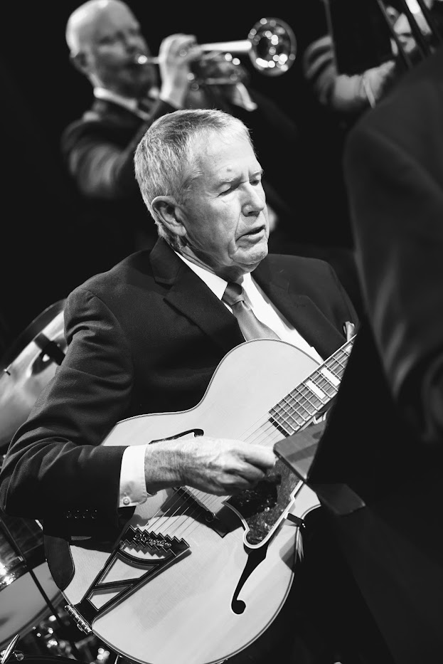

Bio
Jim Lichens is a lifelong devotee of jazz guitar. He began taking guitar lessons in 1950, at age seven. Jim's musical explorations carried him through various rock and roll groups during high school and college. In 1963 Jim began playing jazz guitar, copying Herb Ellis and Wes Montgomery solos.
As a full-time engineering student at San Jose State, Jim had as many as 80 individual students and played up to five nights a week with a jazz quartet. (1965 article about Jim's quartet) Later, while travelling through Paris, Jim was offered a great job, playing guitar in a hotel jazz band.
Never one to self-aggrandize, Jim tells a story about playing for George and Patty Harrison, a night that went terribly wrong. While in the Peace Corps in India, circa 1967, Jim was playing at the Taj Mahal Hotel. Keenly aware of the rock and roll royalty watching him, he lost his confidence and made all sorts of mistakes. Things snowballed a bit and, as Jim tells it, George and Patty wound up with a good laugh and Jim ended up with a good lesson—don't psych yourself out.
Jim Lichens knows what it means to conjure up the inspiration, motivation and effort to master jazz guitar. He continues to deeply enjoy his lifelong journey: to understand, play and teach jazz. Jim has the deep knowledge and teaching experience to help students achieve high standards of musicality. Just take a look at Jim's work in compiling and editing two "Master Series" guitar books published by Mel Bay: Mel Bay Barry Galbraith Guitar Solos
Review of Barry Galbraith Guitar Solos by Jim Hall
In 2008 Jim played in a Gypsy quintet, "Hot Club Eugene", that opened the West Coast Django Reinhardt Festival on Whitby Island, Washington. He currently enjoys teaching private lessons. Jim says that teaching students who are serious about learning jazz guitar gives him plenty of satisfaction. The wealth of knowledge he possesses is a rare find for any aspiring jazz guitarist.
Now for a personal note. I have been taking jazz guitar lessons from Jim Lichens for only two months. Already I have noticed a deepening understanding of jazz guitar and it has influenced my roles as songwriter, band leader, guitarist, singer and harmonica player. Jim has introduced me to a simpler, more fluid way to play rhythm, given me plenty of tips and a few secrets only a true old school pro could convey.
Jim's enthusiasm is contagious-- even for someone who is already a guitar freak. He has been open to helping me develop my own goals as a learner, keeping the bigger picture in mind. Jim's extensive experience with the instrument is informed by the entire span of jazz history. It is exciting to have someone like Jim at my side as I overcome my Jazzophobia, and gradually demystify the process of playing jazz of all stripes. I recommend Jim Lichens very highly to anyone who is serious about learning jazz guitar.
Jerry Rasch- guitar, harmonica and vocals (currently with local quartet, "The Mood Escalators")
Lessons
Lessons are $40 each. Lessons will take place at Jim's teaching studio in Louisville, CO. Jim can be contacted by email at soloflt1@gmail.com
Audio
In 1996, Jim and his friend Neil Janssen released their CD Solo Flight which received glowing reviews. Check out their favorite tracks and reviews below.
Old FolksSandu
The Jazz Guitar
Review of Solo Flight by tradebit.com
Solo Flight by Neil Janssen and Jim Lichens